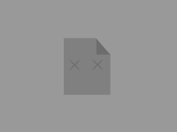

Como proyecto personal, quiero encontrarme con mi
actual pareja, la cual vive lejos de mi.
Nosotros comenzamos a estudiar con esos fines
buscando un trabajo de esto que nos fascina.
Mi proyecto como desarrollador java, principalmente es
"AnimaText", el cual es un programa que redacta o cuenta
cualquier historia de forma dinamica y divertida.
Lo que busco con el, es darles a los lectores un nuevo
mundo en el cual adentrarse con sus mejores historias.
Por ultimo, como programador web, quiero dedicarme al
Back end o FrontEnd, en una empresa que realmente busque
una meta.
Ya sea buscando la comersializacion, ayuda para la gente
o lo que sea, pero que tenga una meta definida, asi puedo
sacar mi maximo partido a las habilidades.
Sobre mi en general.
Como me llamo y donde vivo?
Me llamo Lucas Tomas Ferreyra
Vivo en Argentina, Mar del plata y amo el lugar
donde naci.
Como soy?
Soy a quien le gusta pensar de manera logica,
y desde que aprendi mi primer leguaje (C++) hace 4 años,
esto se intencifico, hasta hacerse parte de mi forma de ser.
Tambien suelo ser alguien paciente, pero rapido a la hora de
estar en codigo.
Soy algo entuciasta y extrovertido, carismatico pero si se requiere
tambien serio.
Mis Gustos
Instrumentos Musicales.
Me gustaria tocar la flauta, la bateria o la guitarra.
Musica.
Me gusta el rock-Pop, metal, electro, instrumental, y algunas
bandas entre los 2008-2013.
General.
Me gustan los urones, los gatos y los ratones, tambien la comida
casera, el Té y muuucho el arroz.
Me gustan las series como "The BigBangh Theory" y las peliculas de
Ciencia-Ficcion, suspenso y animadas.
Me gustan los juegos RPG, pixel-art y los estilos (en general) de
SteamPunk.
Estudios, Trabajos y Experiencias.
Estudie en "EducacionIT" con el curso de Java SE 11 web,
llegando a sacar mi certificado como tal.
El resto de mis conocimientos son aprendizaje autonomo,
y con ayuda de internet.
Trabajo actualmente en una pequeña panaderia, que con suerte
me da como para seguir estudiando y el tiempo para aprender
mucho.
En el rubro de la programacion, como trabajo remunerado aun
nada, pero es lo que busco.
Tengo experiencias como autonomo y con algunos de los proyectos
en los que actualmente trabajo con un equipo.
"AnimaText" es el proyecto en el que mas tiempo inverti,
ademas de ser mi proyecto personal de preferencia.
MySQL
Java 11 SE
*******
HTML
GIT
CSS
M.Mens
En progreso
info
M.Mens es una tienda virtual ficticia
en la que puedes comprar ropa formal
para hombres.
Es un proyecto grupal y bien gestionado
Hecho con:
HTML, CSS, JS, BD SQL.
AnimaText
En progreso
info
Redactador dinamico.
Este programa esta
hecho para lectores
que quieran probar algo
nuevo a la hora de ver
sus hitorias.
Esta hecho con:
Java (no frameworks).
MArch

Idea
info
MArch es un gestor de
arcivos en carpetas,
basicamente te ordena
la carpeta que
selecciones y mueve
los archivos de forma
odenada a la ruta que
tengas a disposicion
filtrando entre
extenciones